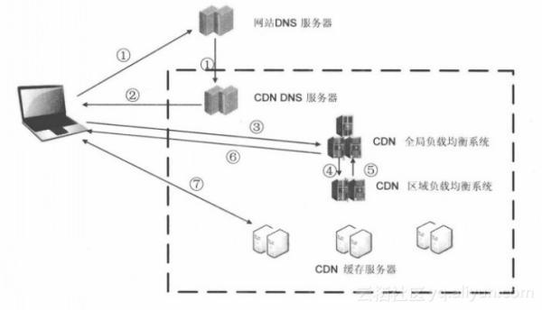

CDN
全称是Content Delivery Network，即内容分发网络。是一种透过互联网互相连接的计算机网络系统，利用最靠近每位用户的服务器来更快更可靠地将音乐，图片，影片，应用程序及其他文件发送给用户， 以此来提供高性能，可拓展性及低成本的将网络内容传递给用户。
技术
在多个地点，多个不同的网络上摆放节点，这些节点会动态的传输内容，对用户的下载行为最优化，减少内容供应者所需要的带宽成本，改善用户的下载速度，提高系统稳定性。
CDN所需要的节点数量随着需求和服务对象的大小而不同
工作方式一般是基于nginx的模式，即仅仅缓存网站的静态资源，在HTTPS的作用下变成nginx+SNI的模式(一个CDN节点上可以借此技术绑定N个域名)
优点
- 承载的用户数量比传统单一服务器多
- 将服务器放到不同的地点，可以减少互连的流量，降低带宽成本
- 选择就近的服务器给用户纷发资源，减少延迟和数据包漏失率，使一些高带宽的应用（点播，直播，高画质的影片）更容易推动
- 在一个服务器宕机的情况下可以调用临近的服务器进行服务，提高可靠度
- 服务提供者拥有更多的控制权，可以根据客户，地区或其他因素来进行调整
- 集群抗攻击，广泛分布的CDN节点加上节点之间的冗余机制，可以有效地预防黑客入侵以及降低各种DDoS攻击对网站的影响，同时保证较好的服务质量 。
结构
一般分为中心与边缘节点两部分，中心节点负责全局负载均衡管理与内容管理。
中心节点功能：
- 随时监控边缘节点的健康状况（可用性，拥塞程度）；
- 根据边缘节点到请求端的距离，以及边缘节点的健康状况，按一定的策略重定向请求；
- 与源站进行数据同步。
工作原理
- 当用户点击网站页面上的内容URL，经过本地DNS系统解析，DNS系统会最终将域名的解析权交给CNAME指向的CDN专用DNS服务器。
- CDN的DNS服务器将CDN的全局负载均衡设备IP地址返回用户。
- 用户向CDN的全局负载均衡设备发起内容URL访问请求。
- CDN全局负载均衡设备根据用户IP地址，以及用户请求的内容URL，选择一台用户所属区域的区域负载均衡设备，告诉用户向这台设备发起请求。
- 区域负载均衡设备会为用户选择一台合适的缓存服务器提供服务，选择的依据包括：根据用户IP地址，判断哪一台服务器距用户最近；根据用户所请求的URL中携带的内容名称，判断哪一台服务器上有用户所需内容；查询各个服务器当前的负载情况，判断哪一台服务器尚有服务能力。基于以上这些条件的综合分析之后，区域负载均衡设备会向全局负载均衡设备返回一台缓存服务器的IP地址。
- 全局负载均衡设备把服务器的IP地址返回给用户。
- 用户向缓存服务器发起请求，缓存服务器响应用户请求，将用户所需内容传送到用户终端。如果这台缓存服务器上并没有用户想要的内容，而区域均衡设备依然将它分配给了用户，那么这台服务器就要向它的上一级缓存服务器请求内容，直至追溯到网站的源服务器将内容拉到本地。